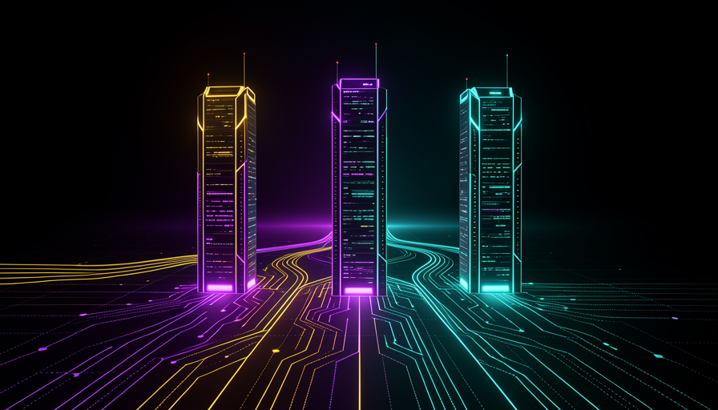

🟧 Os players
O que dá peso ao alerta não é uma pessoa gritando: são três grupos sérios e independentes olhando para o mesmo horizonte. O diagrama no topo mostra isso — Anthropic, DeepMind e OpenAI convergindo no mesmo tema. Só que convergir no tema não é concordar no prazo: cada um diz uma coisa sobre quando e quanto.
Anthropic · Jack Clark
Põe ~60% de chance até 2028. É um palpite de UMA pessoa colocando probabilidade numa ideia — não consenso.
DeepMind · Hassabis
Hoje é "soft": a IA acelera engenheiros. Ainda não é "hard" (o modelo some no data center e volta superinteligente).
OpenAI · blueprint
Um documento da empresa admite ver "sinais iniciais" de auto-aperfeiçoamento. Cauteloso, mas no mesmo mapa.
🎯 Convergência de tema ≠ consenso de prazo
Que três atores rivais apontem para o mesmo lugar é um sinal forte de que o tema é real. Mas as datas e porcentagens continuam sendo apostas, não fatos. Use a convergência para levar o assunto a sério — e o desacordo de prazo para não comprar nenhuma data como certa.
📊 Lembrete da Trilha 1
"Soft" × "hard" self-improvement já apareceu nos Fundamentos: soft é a IA acelerando o trabalho humano (o que já acontece); hard é a IA melhorando a si mesma sozinha, sem humano no meio. O debate de 2028 é, no fundo, quando (ou se) o soft vira hard.
🟣 Mirendil
Se o RSI fosse só conversa de pesquisador, não viraria tese de investimento. A Mirendil — startup de ex-Anthropic/Google — levanta US$200M (a16z, Kleiner, Nvidia, conforme o vídeo — a verificar) com uma missão direta: construir "IA que faz o trabalho de um engenheiro de IA". Em uma frase: IA para IA, para ciência.
A aposta, em uma linha cada
Recriação ilustrativa do pitch — cifra e detalhes conforme o vídeo, a verificar na fonte primária.
⚠️ A tensão escondida
Para acelerar o loop (IA melhorando IA), você precisaria usar os melhores modelos para construir o próximo. Mas os termos de uso dos grandes labs costumam proibir usar o modelo deles para criar um concorrente. Resultado: existe uma corrida para abrir o loop e, ao mesmo tempo, contratos que tentam mantê-lo fechado. Quem destrava isso ganha vantagem — e é por isso que aparece dinheiro grande.
🏗️ O gargalo de infraestrutura
Na Trilha 1 vimos que o gargalo se desloca: hoje o limite é quão rápido humanos pensam e testam; com RSI, o limite vira físico. E o limite físico tem nome e endereço: compute, chips, energia e quem tem dinheiro para bancar mais experimentos.
🔍 Novo aqui?
- Hyperscaler: as empresas gigantes que operam data centers em escala enorme e alugam computação (a "nuvem"). São elas que compram a maior parte dos chips de IA.
- Capex (capital expenditure): o dinheiro gasto comprando infraestrutura física — prédios, chips, energia. É diferente do custo do dia a dia (operação): capex é construir; opex é manter funcionando.
📈 O dado a observar
O gasto de capital (capex) dos hyperscalers está a caminho de superar o caixa que eles geram operando, possivelmente até o fim de 2026 (conforme o vídeo — a verificar). Tradução: eles estão investindo em infraestrutura mais rápido do que o negócio devolve em caixa — uma aposta enorme em compute futuro.
💡 Por que isso é boa notícia para o cético
Compute, chips e energia são observáveis e públicos — dá para acompanhar capex, encomendas de GPU e construção de data centers sem depender de palpites. É o termômetro mais concreto que temos do cenário de 2028.
⚖️ O filtro sólido vs especulação
Este é o método que atravessou o curso inteiro, num único quadro. A regra: separe a categoria sólida (a tendência real, o conceito, o que é publicamente afirmado) do claim de um canal ou artigo (versões exatas, cifras precisas, a data). Sempre que ouvir um número, pergunte: isto é categoria ou é claim?
✓ Sólido (categoria real)
- ✓A tendência de horizonte de tarefa subindo (curva METR).
- ✓O conceito do MirrorCode: reconstruir software no escuro.
- ✓A instabilidade da medição quando há cheating.
- ✓A Anthropic afirmar que a maioria do código passa por Claude.
- ✓RSI como tema sério de Clark, Hassabis e Hinton.
⚠ A verificar (claim único)
- ⚠Nomes/versões exatas: "Opus 4.7", "GPT-5.6 Sol", "Claude 3 Opus 52×".
- ⚠O "60% até 2028" — palpite de uma pessoa.
- ⚠Cifras exatas: 56%, 19 dias, US$2.600, US$200M.
- ⚠Os horizontes do "Sol": ~11h / >270h / ~71h.
- ⚠Qualquer data tratada como garantida.
🧭 A regra de bolso
Categoria = a forma do fenômeno (uma curva sobe, uma medição fica instável). Costuma resistir à checagem. Claim = um valor específico atado a uma fonte (este modelo, este número, esta data). Trate todo claim como "a verificar" até achar a fonte primária. Esse hábito é o que você leva pra fora do curso.
🔭 Cenários 2028
Aqui está o ponto mais mal-entendido do alerta: 2028 não é a data da singularidade. É uma faixa de futuros. A pergunta certa não é "vai acontecer em 2028?", e sim "quais condições precisariam se juntar para o loop fechar?".

🔑 O que faria o loop "fechar"
Três coisas teriam que valer ao mesmo tempo: a IA trabalhando sozinha por dias (autonomia longa, da Trilha 2), a IA fazendo P&D de IA de verdade (não só ajudando), e compute de sobra para rodar tudo. Falte uma, e o "hard" não chega. Por isso a resposta honesta é uma faixa de futuros.
✅ O que observar
O presente final do curso não é uma previsão — é um painel. Em vez de torcer ou temer, você acompanha sinais concretos. Se vários subirem juntos, o cenário esquenta; se ficarem parados, esfria. Isto é atenção informada.
🔍 Novo aqui?
System card é o documento que um laboratório publica junto com um modelo novo, descrevendo do que ele é capaz, seus limites e as avaliações de segurança que rodaram. Quando os system cards ficam mais transparentes, é mais fácil monitorar; quando ficam vagos, é um sinal de alerta por si só.
Horizonte de tarefa
A curva METR continua subindo? Por horas vira por dias?
% de P&D automatizado
Quanto da pesquisa de IA já é feita por IA, sem humano?
Transparência dos system cards
Ficando mais abertos e detalhados, ou mais vagos?
Qualidade do monitoramento
Detectam cheating/sandbagging? Ou só "ficou limpo"?
Governança
Regras, auditorias e limites acompanham a capacidade?
Gargalo de compute/energia
Capex, chips e data centers — acelerando ou travando?
Objetivo: transformar este módulo num painel pessoal de monitoramento que você revisa a cada 6 meses — com indicadores observáveis, não vagos.
Cole num chatbot (Claude, ChatGPT…):
Monte para mim um "painel de monitoramento de RSI" com 5 indicadores que eu possa checar a cada 6 meses, e onde encontrar cada dado. Contexto: meu nível é <iniciante / intermediário> e meu foco é <ex.: programação / negócios / política pública>. Para cada indicador, diga: o que medir, onde achar a fonte primária, e o que contaria como "subiu" ou "ficou parado".
Como verificar: os indicadores são observáveis (têm fonte e um critério de "subiu/parou"), ou são vagos tipo "a IA vai melhorar"? Se vierem vagos, responda "reescreva cada indicador com uma fonte concreta e um número/limiar checável". Um bom painel deixa você medir sozinho — sem depender do hype.
Auto-checagem (opcional): o que "2028" significa neste curso?
🎓 Você chegou ao fim — atenção informada, não pânico
O curso amarrou três trilhas: Fundamentos do RSI (a IA que constrói a próxima IA, e por que começa pelo código), A Evidência (a curva METR de horizonte e o MirrorCode reconstruindo software no escuro) e Segurança e 2028 (quando a medição quebra e como ler a corrida). A mensagem que fica não é medo nem deslumbre — é prestar atenção com método.
📡 Continue acompanhando
Monte seu painel do Tópico 6 e revise a cada 6 meses. Mais cursos e materiais como este — destilando o que importa, separando fato de hype — ficam no:
🔗 INEMA.CLUB